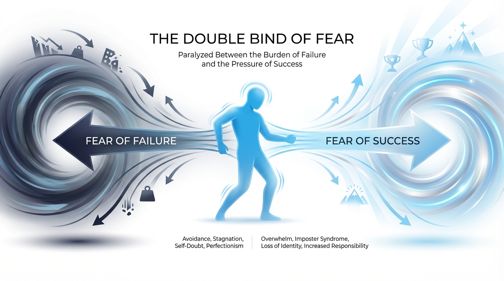
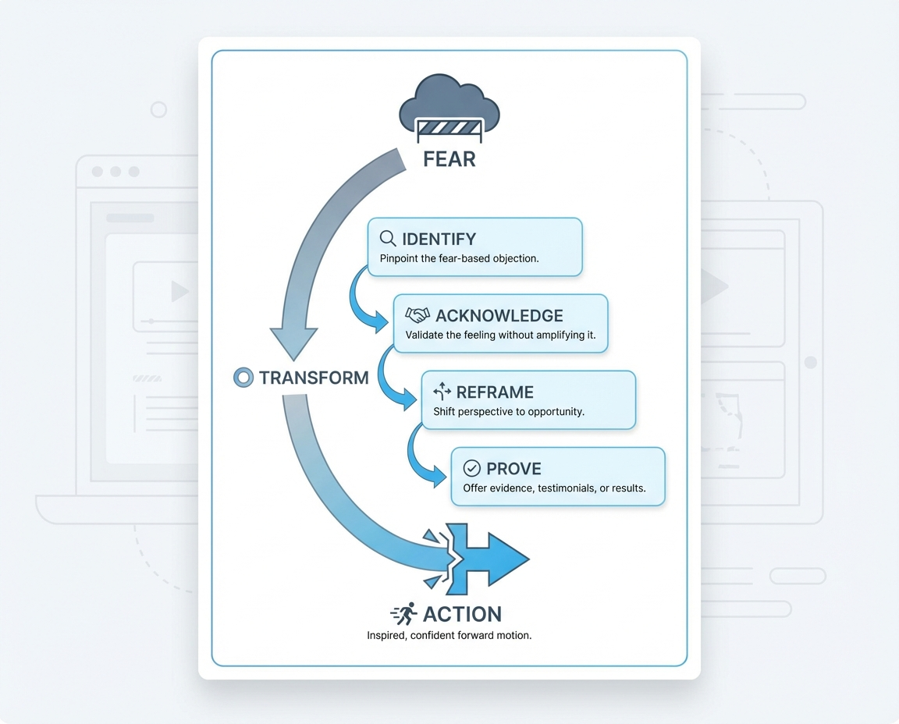

<!DOCTYPE html>
<html lang="en">
<head>
  <meta charset="UTF-8">
  <meta name="viewport" content="width=device-width, initial-scale=1.0">
  <title>The Double Bind of Fear</title>
  <script src="https://cdn.tailwindcss.com"></script>
  <script src="https://unpkg.com/react@18/umd/react.production.min.js"></script>
  <script src="https://unpkg.com/react-dom@18/umd/react-dom.production.min.js"></script>
  <script src="https://unpkg.com/@babel/standalone/babel.min.js"></script>
  <script src="https://unpkg.com/framer-motion@10.16.4/dist/framer-motion.js"></script>
  <link href="https://fonts.googleapis.com/css2?family=Inter:wght@300;400;500;600;700;800&display=swap" rel="stylesheet">
  <script>
    tailwind.config = {
      theme: {
        extend: {
          colors: {
            accent: {
              DEFAULT: '#0ea5e9',
              50: '#f0f9ff',
              100: '#e0f2fe',
              200: '#bae6fd',
              300: '#7dd3fc',
              400: '#38bdf8',
              500: '#0ea5e9',
              600: '#0284c7',
              700: '#0369a1',
              800: '#075985',
              900: '#0c4a6e',
            }
          }
        }
      }
    }
  </script>
  <style>
    * { font-family: 'Inter', -apple-system, BlinkMacSystemFont, sans-serif; }
    body { background: #FFFFFF; color: #1a1a1a; overflow-x: hidden; }
    ::selection { background: #0ea5e9; color: #fff; }
    h1, h2, h3, h4 { letter-spacing: -0.025em; }
    .lesson-container { max-width: 800px; margin: 0 auto; }
  </style>
</head>
<body>
  <div id="root"></div>

  <script type="text/babel">
    const { motion, useInView, AnimatePresence } = window.Motion;
    const { useState, useRef, useEffect } = React;

    const smoothEase = [0.25, 0.4, 0.25, 1];

    // Icons
    const Icons = {
      AlertTriangle: () => (
        <svg width="20" height="20" viewBox="0 0 24 24" fill="none" stroke="currentColor" strokeWidth="2" strokeLinecap="round" strokeLinejoin="round">
          <path d="M10.29 3.86L1.82 18a2 2 0 0 0 1.71 3h16.94a2 2 0 0 0 1.71-3L13.71 3.86a2 2 0 0 0-3.42 0z"/><line x1="12" y1="9" x2="12" y2="13"/><line x1="12" y1="17" x2="12.01" y2="17"/>
        </svg>
      ),
      TrendingDown: () => (
        <svg width="20" height="20" viewBox="0 0 24 24" fill="none" stroke="currentColor" strokeWidth="2" strokeLinecap="round" strokeLinejoin="round">
          <polyline points="23 18 13.5 8.5 8.5 13.5 1 6"/><polyline points="17 18 23 18 23 12"/>
        </svg>
      ),
      TrendingUp: () => (
        <svg width="20" height="20" viewBox="0 0 24 24" fill="none" stroke="currentColor" strokeWidth="2" strokeLinecap="round" strokeLinejoin="round">
          <polyline points="23 6 13.5 15.5 8.5 10.5 1 18"/><polyline points="17 6 23 6 23 12"/>
        </svg>
      ),
      Shield: () => (
        <svg width="20" height="20" viewBox="0 0 24 24" fill="none" stroke="currentColor" strokeWidth="2" strokeLinecap="round" strokeLinejoin="round">
          <path d="M12 22s8-4 8-10V5l-8-3-8 3v7c0 6 8 10 8 10z"/>
        </svg>
      ),
      Zap: () => (
        <svg width="20" height="20" viewBox="0 0 24 24" fill="none" stroke="currentColor" strokeWidth="2" strokeLinecap="round" strokeLinejoin="round">
          <polygon points="13 2 3 14 12 14 11 22 21 10 12 10 13 2"/>
        </svg>
      ),
      Target: () => (
        <svg width="20" height="20" viewBox="0 0 24 24" fill="none" stroke="currentColor" strokeWidth="2" strokeLinecap="round" strokeLinejoin="round">
          <circle cx="12" cy="12" r="10"/><circle cx="12" cy="12" r="6"/><circle cx="12" cy="12" r="2"/>
        </svg>
      ),
      RefreshCw: () => (
        <svg width="20" height="20" viewBox="0 0 24 24" fill="none" stroke="currentColor" strokeWidth="2" strokeLinecap="round" strokeLinejoin="round">
          <polyline points="23 4 23 10 17 10"/><polyline points="1 20 1 14 7 14"/><path d="M3.51 9a9 9 0 0 1 14.85-3.36L23 10M1 14l4.64 4.36A9 9 0 0 0 20.49 15"/>
        </svg>
      ),
      Unlock: () => (
        <svg width="20" height="20" viewBox="0 0 24 24" fill="none" stroke="currentColor" strokeWidth="2" strokeLinecap="round" strokeLinejoin="round">
          <rect x="3" y="11" width="18" height="11" rx="2" ry="2"/><path d="M7 11V7a5 5 0 0 1 9.9-1"/>
        </svg>
      ),
    };

    // Animation components
    function FadeUp({ children, delay = 0, className = "" }) {
      const ref = useRef(null);
      const isInView = useInView(ref, { once: true, margin: "-80px" });
      return (
        <motion.div
          ref={ref}
          className={className}
          initial={{ opacity: 0, y: 40 }}
          animate={isInView ? { opacity: 1, y: 0 } : {}}
          transition={{ duration: 0.7, delay, ease: smoothEase }}
        >
          {children}
        </motion.div>
      );
    }

    function ScaleIn({ children, delay = 0, className = "" }) {
      const ref = useRef(null);
      const isInView = useInView(ref, { once: true, margin: "-50px" });
      return (
        <motion.div
          ref={ref}
          className={className}
          initial={{ opacity: 0, scale: 0.95 }}
          animate={isInView ? { opacity: 1, scale: 1 } : {}}
          transition={{ duration: 0.6, delay, ease: smoothEase }}
        >
          {children}
        </motion.div>
      );
    }

    function Counter({ end, suffix = "", prefix = "" }) {
      const [count, setCount] = useState(0);
      const ref = useRef(null);
      const isInView = useInView(ref, { once: true });

      useEffect(() => {
        if (isInView) {
          let start = 0;
          const duration = 2000;
          const increment = end / (duration / 16);
          const timer = setInterval(() => {
            start += increment;
            if (start >= end) {
              setCount(end);
              clearInterval(timer);
            } else {
              setCount(Math.floor(start));
            }
          }, 16);
          return () => clearInterval(timer);
        }
      }, [isInView, end]);

      return <span ref={ref}>{prefix}{count}{suffix}</span>;
    }

    // Interactive Fear Toggle
    function FearToggle() {
      const [activeFear, setActiveFear] = useState('failure');

      const fears = {
        failure: {
          title: "Fear of Failure",
          thought: "What if I try this and it doesn't work? I'll feel like a loser.",
          behavior: "Procrastination, over-research, endless 'getting ready to get ready'",
          solution: "Reframe failure as data collection. Every attempt teaches something."
        },
        success: {
          title: "Fear of Success",
          thought: "What if I try this and succeed beyond my wildest dreams? That's unfamiliar and scary.",
          behavior: "Self-sabotage, playing small, avoiding opportunities that could actually work",
          solution: "Paint a vivid, safe picture of success. Make the unfamiliar feel familiar."
        }
      };

      return (
        <div className="bg-white rounded-2xl border border-neutral-200 overflow-hidden">
          <div className="grid grid-cols-2">
            <button
              onClick={() => setActiveFear('failure')}
              className={`py-4 px-4 text-center transition-all border-b-2 ${activeFear === 'failure' ? 'border-accent-500 bg-accent-50' : 'border-transparent hover:bg-neutral-50'}`}
            >
              <Icons.TrendingDown />
              <p className={`text-sm font-medium mt-2 ${activeFear === 'failure' ? 'text-accent-700' : 'text-neutral-600'}`}>Fear of Failure</p>
            </button>
            <button
              onClick={() => setActiveFear('success')}
              className={`py-4 px-4 text-center transition-all border-b-2 ${activeFear === 'success' ? 'border-accent-500 bg-accent-50' : 'border-transparent hover:bg-neutral-50'}`}
            >
              <Icons.TrendingUp />
              <p className={`text-sm font-medium mt-2 ${activeFear === 'success' ? 'text-accent-700' : 'text-neutral-600'}`}>Fear of Success</p>
            </button>
          </div>
          <motion.div
            key={activeFear}
            initial={{ opacity: 0, y: 10 }}
            animate={{ opacity: 1, y: 0 }}
            className="p-6"
          >
            <h4 className="text-lg font-semibold text-neutral-900 mb-3">{fears[activeFear].title}</h4>
            <div className="space-y-4">
              <div className="bg-neutral-100 rounded-lg p-4 border border-neutral-200">
                <p className="text-xs text-neutral-600 uppercase tracking-wider mb-1">The Thought</p>
                <p className="text-sm text-neutral-700 italic">"{fears[activeFear].thought}"</p>
              </div>
              <div className="bg-white rounded-lg p-4 border border-neutral-200">
                <p className="text-xs text-neutral-500 uppercase tracking-wider mb-1">The Behavior</p>
                <p className="text-sm text-neutral-700">{fears[activeFear].behavior}</p>
              </div>
              <div className="bg-neutral-900 rounded-lg p-4">
                <p className="text-xs text-neutral-400 uppercase tracking-wider mb-1">The Solution</p>
                <p className="text-sm text-neutral-300">{fears[activeFear].solution}</p>
              </div>
            </div>
          </motion.div>
        </div>
      );
    }

    // Main Lesson Component
    function Lesson() {
      return (
        <div className="bg-white min-h-screen overflow-x-hidden">
          {/* Hero Section - Black with gradient accent */}
          <header className="bg-neutral-950 text-white relative overflow-hidden">
            <div className="absolute top-0 right-0 w-96 h-96 bg-gradient-to-bl from-accent-600/10 to-transparent rounded-full blur-3xl" />
            <div className="absolute bottom-0 left-0 w-64 h-64 bg-gradient-to-tr from-accent-900/20 to-transparent rounded-full blur-2xl" />

            <div className="lesson-container px-6 py-20 relative z-10">
              <FadeUp>
                <div className="flex items-center gap-2 mb-6">
                  <span className="px-3 py-1 bg-accent-600/20 text-accent-400 text-xs font-semibold rounded-full tracking-wide uppercase">
                    Architecture of Belief
                  </span>
                </div>
              </FadeUp>

              <FadeUp delay={0.1}>
                <h1 className="text-4xl font-extrabold mb-4 leading-tight">
                  The Double Bind of Fear
                </h1>
              </FadeUp>

              <FadeUp delay={0.2}>
                <p className="text-xl text-neutral-300 mb-8 max-w-2xl leading-relaxed">
                  Your prospects are trapped between two fears that prevent action. Learn to identify and dissolve both to unlock buying behavior.
                </p>
              </FadeUp>

              <FadeUp delay={0.3}>
                <div className="flex flex-wrap gap-6 text-sm text-neutral-400">
                  <div className="flex items-center gap-2">
                    <Icons.AlertTriangle />
                    <span>2 hidden obstacles</span>
                  </div>
                  <div className="flex items-center gap-2">
                    <Icons.Zap />
                    <span><Counter end={78} suffix="%" /> of prospects paralyzed</span>
                  </div>
                </div>
              </FadeUp>
            </div>
          </header>

          {/* Main Content */}
          <main className="px-6 py-12">
            <div className="lesson-container space-y-16">

              {/* The Core Problem */}
              <FadeUp>
                <section>
                  <p className="text-lg text-neutral-700 leading-relaxed">
                    Here's a truth that will change how you write forever: <strong>most people don't buy things they should buy, even when they believe your claims.</strong>
                  </p>
                  <p className="text-lg text-neutral-700 leading-relaxed mt-4">
                    Why? Because they are stopped by emotion. And the primary emotional obstacle is fear—but not the fear you might expect. It operates as a "double bind" that traps prospects in inaction.
                  </p>
                </section>
              </FadeUp>

              {/* Hero Image */}
              <ScaleIn>
                <div className="bg-neutral-950 -mx-6 md:-mx-0 md:rounded-2xl overflow-hidden">
                  
                </div>
              </ScaleIn>


              {/* Hero Image */}
              <ScaleIn>
                <div className="rounded-2xl overflow-hidden bg-neutral-100 max-w-2xl mx-auto">
                  
                </div>
              </ScaleIn>

              {/* The Two Fears - Black Section */}
              <FadeUp>
                <section className="bg-neutral-950 rounded-3xl p-8 md:p-10 overflow-hidden relative">
                  <div className="absolute top-0 right-0 w-64 h-64 bg-gradient-to-bl from-accent-600/20 to-transparent rounded-full blur-3xl" />

                  <div className="relative z-10">
                    <div className="flex items-center gap-3 mb-6">
                      <div className="w-10 h-10 rounded-xl bg-gradient-to-br from-accent-400 to-accent-600 flex items-center justify-center text-white">
                        <Icons.AlertTriangle />
                      </div>
                      <h2 className="text-2xl font-bold text-white">The Two Faces of Fear</h2>
                    </div>

                    <p className="text-neutral-300 leading-relaxed mb-8">
                      Jason Fladlien identifies fear as operating through a "double bind"—your prospects are simultaneously afraid of two opposite outcomes. Both fears must be addressed or they remain paralyzed.
                    </p>

                    <div className="grid md:grid-cols-2 gap-6">
                      <div className="bg-white/5 backdrop-blur rounded-xl p-6 border border-white/10">
                        <div className="flex items-center gap-2 mb-3">
                          <Icons.TrendingDown />
                          <span className="text-accent-400 font-semibold">Fear of Failure</span>
                        </div>
                        <p className="text-sm text-neutral-300 italic mb-3">"What if I try this and it doesn't work? I'll feel like a loser."</p>
                        <p className="text-xs text-neutral-400">This fear keeps people stuck researching, planning, and "getting ready to get ready" instead of acting.</p>
                      </div>

                      <div className="bg-white/5 backdrop-blur rounded-xl p-6 border border-white/10">
                        <div className="flex items-center gap-2 mb-3">
                          <Icons.TrendingUp />
                          <span className="text-accent-400 font-semibold">Fear of Success</span>
                        </div>
                        <p className="text-sm text-neutral-300 italic mb-3">"What if I succeed beyond my wildest dreams? That's unfamiliar and scary."</p>
                        <p className="text-xs text-neutral-400">This fear causes self-sabotage and playing small—avoiding the very opportunities that could transform their lives.</p>
                      </div>
                    </div>
                  </div>
                </section>
              </FadeUp>

              {/* Interactive Demo */}
              <FadeUp>
                <section>
                  <h2 className="text-2xl font-bold text-neutral-900 mb-4">Explore Each Fear</h2>
                  <p className="text-neutral-600 mb-6">See how each fear manifests and the strategic solution for your copy.</p>
                  <FearToggle />
                </section>
              </FadeUp>

              {/* The Strategic Solution */}
              <FadeUp>
                <section>
                  <h2 className="text-2xl font-bold text-neutral-900 mb-6">The Reframe Strategy</h2>

                  <p className="text-neutral-600 leading-relaxed mb-6">
                    Your copy must re-pattern their relationship with fear. Don't ignore it—address it directly and reframe it. The goal is to transform fear from a stopping force into a starting force.
                  </p>

                  <div className="bg-accent-50 border border-accent-200 rounded-2xl p-6 mb-6">
                    <p className="text-accent-800 italic text-lg mb-2">"Yeah, you're going to fail... I can't wait to see how you fail your way to $10,000 a month."</p>
                    <p className="text-sm text-accent-700 mt-3">This reframe acknowledges failure as inevitable AND reframes it as the pathway to success. Failure isn't the stopping point; it's the catalyst.</p>
                  </div>

                  <div className="grid md:grid-cols-2 gap-6">
                    <div className="p-5 rounded-xl bg-neutral-50 border border-neutral-200">
                      <div className="w-10 h-10 rounded-xl bg-accent-100 flex items-center justify-center text-accent-600 mb-4">
                        <Icons.RefreshCw />
                      </div>
                      <h3 className="font-semibold text-neutral-900 mb-2">For Fear of Failure</h3>
                      <p className="text-sm text-neutral-600 leading-relaxed">
                        Position failure as data collection, not defeat. Show that every "failed" attempt brings them closer to success. Use stories of people who failed forward—their setbacks became setups.
                      </p>
                    </div>

                    <div className="p-5 rounded-xl bg-neutral-50 border border-neutral-200">
                      <div className="w-10 h-10 rounded-xl bg-accent-100 flex items-center justify-center text-accent-600 mb-4">
                        <Icons.Shield />
                      </div>
                      <h3 className="font-semibold text-neutral-900 mb-2">For Fear of Success</h3>
                      <p className="text-sm text-neutral-600 leading-relaxed">
                        Paint a vivid, safe picture of their successful future. Make the unfamiliar feel familiar. Show them that success won't change who they are—it will reveal who they've always been.
                      </p>
                    </div>
                  </div>
                </section>
              </FadeUp>

              {/* Signs of Each Fear */}
              <FadeUp>
                <section>
                  <h2 className="text-2xl font-bold text-neutral-900 mb-6">How to Spot Each Fear in Your Audience</h2>
                  <p className="text-neutral-600 leading-relaxed mb-6">
                    Before you can address fear, you must recognize its fingerprints. Each type of fear leaves distinct behavioral traces in how prospects engage with your content and offers.
                  </p>

                  <div className="grid md:grid-cols-2 gap-6">
                    <div className="p-5 rounded-xl bg-neutral-50 border border-neutral-200">
                      <h3 className="font-semibold text-neutral-900 mb-3">Fear of Failure Signs</h3>
                      <ul className="space-y-2 text-sm text-neutral-600">
                        <li>Asking endless questions before buying</li>
                        <li>Requesting guarantees and proof repeatedly</li>
                        <li>Adding to cart but never checking out</li>
                        <li>Saying "I need to think about it" indefinitely</li>
                      </ul>
                    </div>
                    <div className="p-5 rounded-xl bg-neutral-50 border border-neutral-200">
                      <h3 className="font-semibold text-neutral-900 mb-3">Fear of Success Signs</h3>
                      <ul className="space-y-2 text-sm text-neutral-600">
                        <li>Dismissing opportunities as "too good to be true"</li>
                        <li>Finding reasons why they're "not ready yet"</li>
                        <li>Expressing concern about what others will think</li>
                        <li>Worrying about maintaining results long-term</li>
                      </ul>
                    </div>
                  </div>
                </section>
              </FadeUp>

              {/* Framework Image */}
              <ScaleIn>
                <div className="rounded-2xl overflow-hidden bg-white border border-neutral-100 shadow-sm max-w-xl mx-auto">
                  
                </div>
              </ScaleIn>

              {/* Real-World Application - Black Section */}
              <FadeUp>
                <section className="bg-neutral-950 rounded-3xl p-8 md:p-10 overflow-hidden relative">
                  <div className="absolute inset-0 bg-gradient-to-t from-accent-900/10 via-transparent to-transparent" />

                  <div className="relative z-10">
                    <h2 className="text-2xl font-bold text-white mb-6">Applying This to Your Copy</h2>

                    <div className="space-y-4">
                      <div className="bg-white/5 backdrop-blur rounded-xl p-5 border border-white/10">
                        <p className="text-xs text-accent-400 uppercase tracking-wider mb-2">Step 1: Identify</p>
                        <p className="text-sm text-neutral-300">Research your audience's specific fears. What failure do they imagine? What success secretly scares them?</p>
                      </div>

                      <div className="bg-white/5 backdrop-blur rounded-xl p-5 border border-white/10">
                        <p className="text-xs text-accent-400 uppercase tracking-wider mb-2">Step 2: Acknowledge</p>
                        <p className="text-sm text-neutral-300">Name the fears directly in your copy. "You might be worried that..." This shows understanding and lowers defenses.</p>
                      </div>

                      <div className="bg-white/5 backdrop-blur rounded-xl p-5 border border-white/10">
                        <p className="text-xs text-accent-400 uppercase tracking-wider mb-2">Step 3: Reframe</p>
                        <p className="text-sm text-neutral-300">Provide a new lens for viewing both fears. Make failure safe and success familiar. Transform obstacles into opportunities.</p>
                      </div>

                      <div className="bg-white/5 backdrop-blur rounded-xl p-5 border border-white/10">
                        <p className="text-xs text-accent-400 uppercase tracking-wider mb-2">Step 4: Prove</p>
                        <p className="text-sm text-neutral-300">Back your reframe with evidence. Share stories of others who faced the same fears and came out transformed on the other side.</p>
                      </div>
                    </div>
                  </div>
                </section>
              </FadeUp>

              {/* Common Mistakes */}
              <FadeUp>
                <section>
                  <h2 className="text-2xl font-bold text-neutral-900 mb-6">Mistakes to Avoid</h2>

                  <div className="space-y-4">
                    <div className="p-5 rounded-xl bg-neutral-100 border border-neutral-200">
                      <h3 className="font-semibold text-neutral-900 mb-2">Ignoring Fear Entirely</h3>
                      <p className="text-sm text-neutral-600">
                        Pretending fear doesn't exist makes your copy feel disconnected from reality. Acknowledge what your prospects are actually feeling.
                      </p>
                    </div>

                    <div className="p-5 rounded-xl bg-neutral-100 border border-neutral-200">
                      <h3 className="font-semibold text-neutral-900 mb-2">Only Addressing One Fear</h3>
                      <p className="text-sm text-neutral-600">
                        If you only address fear of failure, fear of success still blocks action. Both must be dissolved for the prospect to move forward.
                      </p>
                    </div>

                    <div className="p-5 rounded-xl bg-neutral-100 border border-neutral-200">
                      <h3 className="font-semibold text-neutral-900 mb-2">Using Fear as Manipulation</h3>
                      <p className="text-sm text-neutral-600">
                        Amplifying fear to force action backfires. The goal is to dissolve fear, not weaponize it. Help them move toward desire, not run from pain.
                      </p>
                    </div>
                  </div>
                </section>
              </FadeUp>

              {/* Key Takeaways - Black Section */}
              <FadeUp>
                <section className="bg-neutral-950 rounded-3xl p-8 md:p-10">
                  <h2 className="text-2xl font-bold text-white mb-6">Key Takeaways</h2>

                  <div className="grid md:grid-cols-2 gap-4">
                    {[
                      "Prospects are trapped in a 'double bind'—simultaneously afraid of failure AND success. Both must be addressed.",
                      "Fear of failure keeps people researching instead of acting. Reframe failure as data collection on the path to success.",
                      "Fear of success causes self-sabotage. Paint success as familiar and safe, not threatening to their identity.",
                      "Your copy must acknowledge, reframe, and prove. Name the fear, provide a new lens, back it with evidence."
                    ].map((point, i) => (
                      <div key={i} className="flex gap-3 bg-white/5 rounded-xl p-4 border border-white/10">
                        <div className="w-6 h-6 rounded-full bg-accent-500 flex items-center justify-center flex-shrink-0 mt-0.5">
                          <span className="text-xs font-bold text-white">{i + 1}</span>
                        </div>
                        <p className="text-sm text-neutral-300 leading-relaxed">{point}</p>
                      </div>
                    ))}
                  </div>
                </section>
              </FadeUp>

            </div>
          </main>

          {/* Footer */}
          <footer className="py-10 bg-neutral-50">
            <div className="lesson-container px-6 text-center">
              <p className="text-sm text-neutral-400">Part of the Architecture of Belief Series</p>
            </div>
          </footer>
        </div>
      );
    }

    ReactDOM.createRoot(document.getElementById('root')).render(<Lesson />);
  </script>
</body>
</html>
